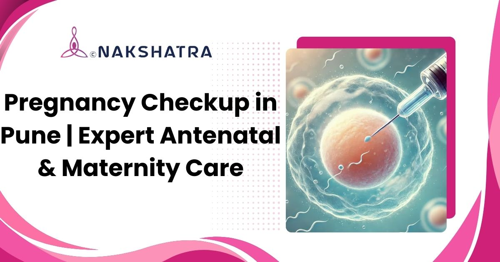

Trimester-wise visits
Regular checkups track vitals, symptoms, and fetal growth through pregnancy.
Regular antenatal checkups, scans, maternal health monitoring, nutrition guidance, and delivery planning for a safer pregnancy journey.

Regular checkups track vitals, symptoms, and fetal growth through pregnancy.
Ultrasound, BP, sugar, urine, and other checks help detect concerns early.
Ongoing care supports labour education, delivery planning, and postnatal guidance.

Pregnancy is a meaningful journey filled with joy, anticipation, and care. Regular pregnancy checkups help make this journey smoother by monitoring the well-being of both mother and baby at every stage. Nakshatra Clinic provides complete pregnancy checkups and antenatal care under the supervision of gynecologists and obstetricians with medical guidance and compassionate support.
The original antenatal service list is preserved in clean cards for desktop and mobile.
Tests, ultrasound, due date estimation, and early guidance on nutrition, supplements, and lifestyle.
Track vitals, symptoms, and fetal growth across all trimesters.
Scans monitor heartbeat, position, and development, with timely care if needed.
Screening helps detect gestational diabetes, infections, or hypertension early.
Balanced diet plans, safe exercise, and supplements support mother and baby.
Specialist monitoring for diabetes, thyroid, hypertension, or twin pregnancy.
Education, pain relief options, and delivery planning help prepare for birth.
Recovery checks, breastfeeding guidance, and emotional support after delivery.
Regular checkups help detect risks, guide care, and prepare mother and baby for a safer pregnancy experience.
Checkups help ensure the baby grows properly till full term.
Diabetes, infections, and high blood pressure can be spotted early.
Every pregnancy is different, so care is tailored to the mother and baby.
Pregnancy concerns can be discussed freely and privately.
Ongoing care helps prepare for labor, birth, and postnatal needs.
The original care-team content remains visible in a responsive card layout.
Complete pregnancy care from early checkups to delivery with trimester-wise monitoring, tests, and ultrasounds.
Advanced care for high-risk or complex pregnancies such as hypertension, diabetes, thyroid issues, or twins.
Diet plans, safe workouts, and routine guidance support healthy maternal and fetal outcomes.
Support helps mothers feel confident, informed, and emotionally steady through pregnancy.
Regular antenatal care helps prevent complications, supports healthy fetal growth, and provides emotional reassurance through timely tests, vaccinations, and expert advice.
Pregnancy checkups include nutritional counselling, exercise advice, emotional support, and childbirth preparation so first-time mothers feel informed and confident.
Yes. High-risk pregnancy care can support cases involving diabetes, hypertension, thyroid issues, or twin pregnancies with monitoring and tailored care plans.
During each visit, the doctor may check blood pressure, weight, baby's heartbeat, and growth. Ultrasound, urine, or blood tests may also be advised.
Regular pregnancy checkups help detect risks like gestational diabetes, thyroid problems, or high blood pressure early and support safer delivery planning.
A pregnancy may be high-risk when the mother has diabetes, hypertension, thyroid concerns, or a multiple pregnancy. Monitoring, diet management, and customised care help protect mother and baby.
Book a consultation at Nakshatra Clinic in Baner, Pune for antenatal checkups, scans, tests, nutrition guidance, and pregnancy monitoring.